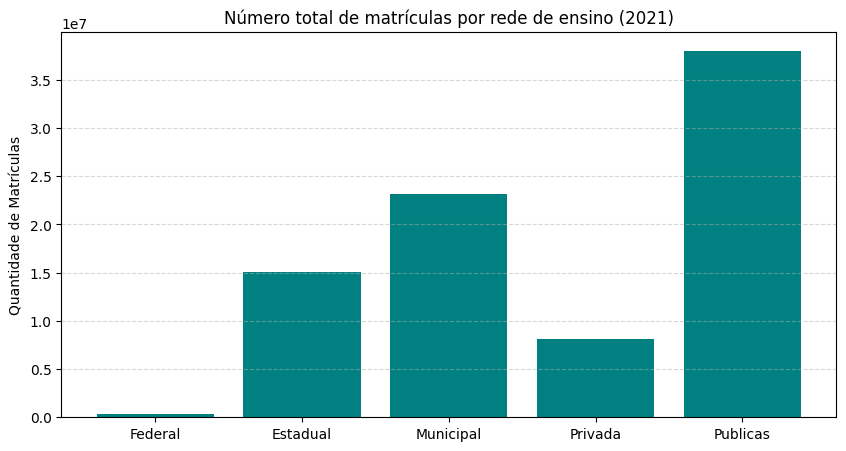
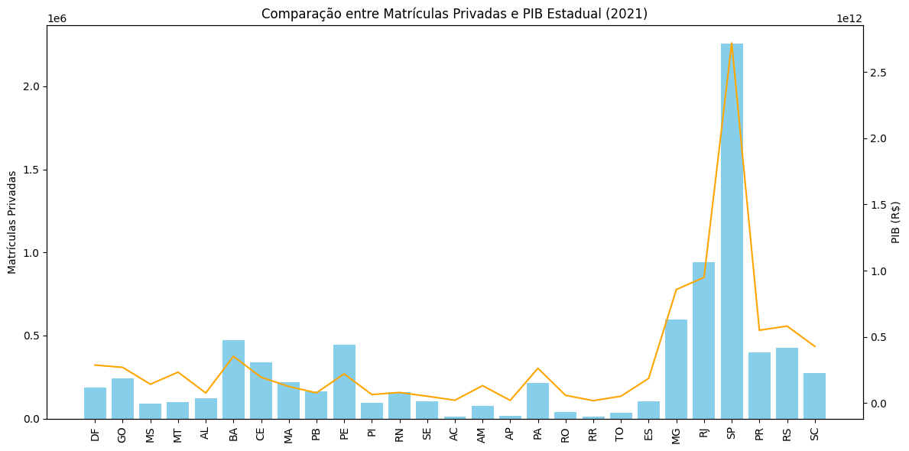
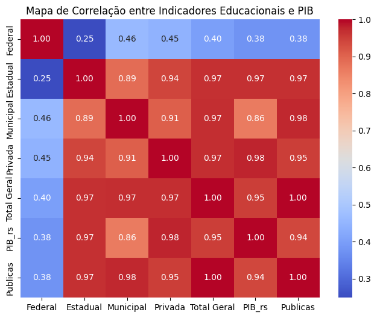
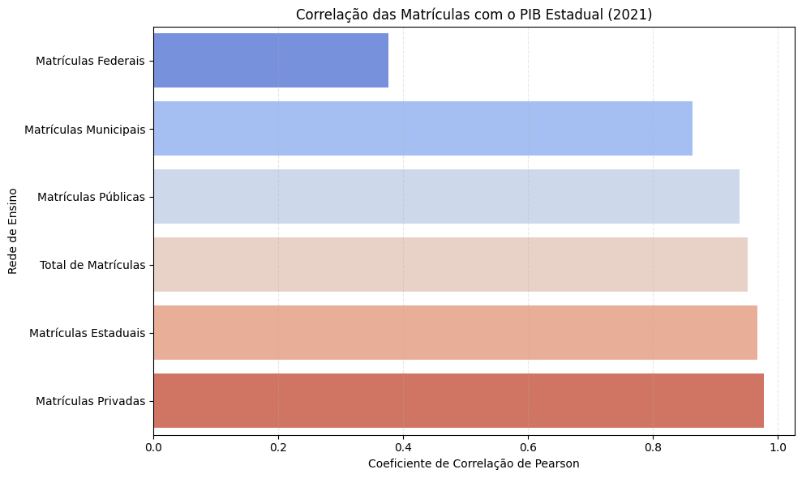

Este Datafólio apresenta uma análise exploratória com base em cinco perguntas principais que buscam entender o perfil da educação no Brasil e sua relação com o Produto Interno Bruto (PIB) estadual em 2021.
As redes públicas (especialmente a municipal) concentram a maior parte das matrículas no Brasil. A rede privada, embora menor, possui maior presença em estados com maior poder aquisitivo.
Sim. Estados com maior PIB, como São Paulo e Rio de Janeiro, concentram também o maior número de matrículas privadas, como visto no gráfico abaixo.
O coeficiente de correlação de Pearson entre o número de matrículas privadas e o PIB estadual foi calculado como 0.98, o que indica uma associação linear extremamente forte entre essas variáveis.
A regressão linear simples mostra que 95,7% da variação do PIB estadual pode ser explicada pelo número de matrículas privadas. O modelo é altamente significativo, com p-valor inferior a 0.001.
O mapa de correlação mostra que as redes públicas têm correlações menores com o PIB, ao passo que a rede privada apresenta a maior correlação. A visualização individual confirma essa hierarquia.
 